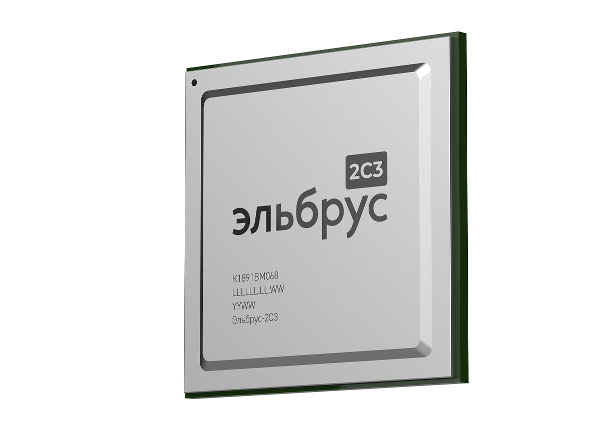
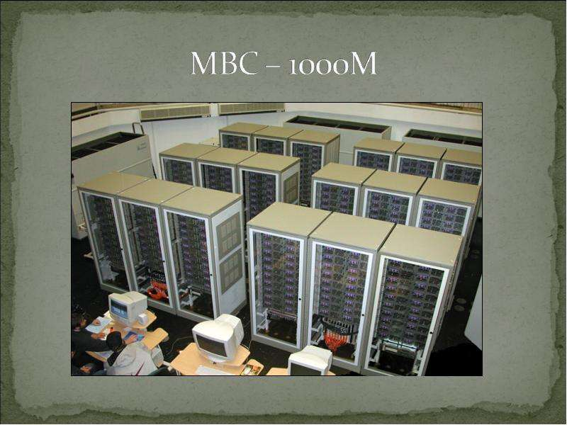
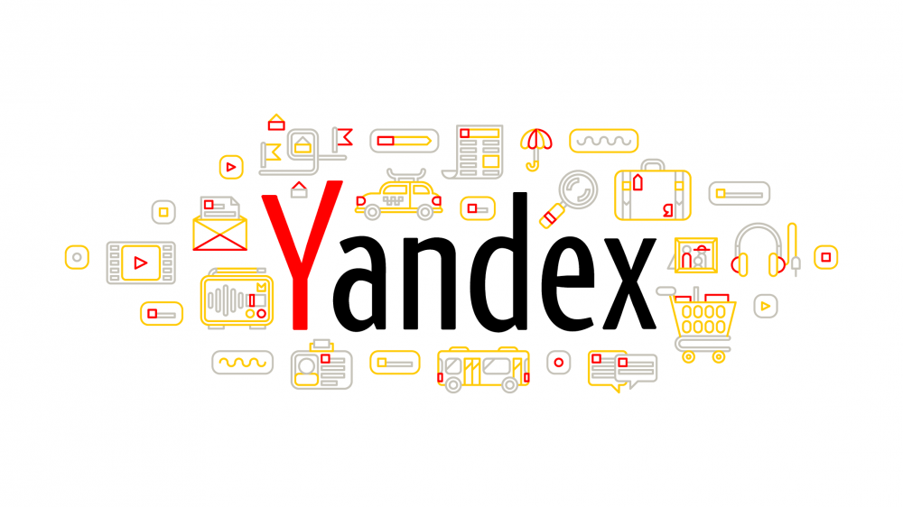

Хронология развития IT в России и СССР

1973–1978
Эльбрус — процессорная архитектура от ИТМиВТ. Высокая производительность и защищённость.

2000–2001
МВС-1000М — суперкомпьютер от НИИ «Квант». 10¹² операций в секунду.

2000
Яндекс — запуск поиска и регистрация компании.

2015
Postgres Pro — отечественная СУБД на базе PostgreSQL.

2016–2018
Baikal-M — ARM-процессор для ПК и серверов.

2017+
Kotlin — язык программирования от JetBrains, поддерживается ИТМО.

1997–2025
Лаборатория Касперского — кибербезопасность.